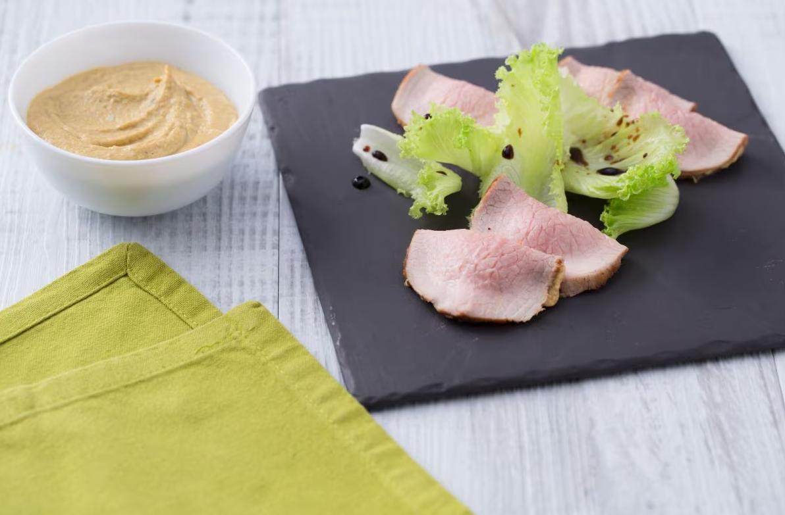

Old-fashioned Veal with Tuna Sauce

Master Course:
Description
Today we present you a typical dish from Piedmont, exactly from the city of Turin: the old-fashioned veal with tuna sauce, so named because nothing is wasted from the cooking process.
Unlike the more classic version of veal with tuna sauce here the meat is not cooked in broth, so it is not boiled but roasted first on the flame and then in the oven.
This process will give you tender meat, perfectly cooked and still pink inside.
Instead of the classic vegetables like carrot and onion, tuna, anchovies, and capers are used, which, together with boiled eggs, will form a creamy tuna sauce without the need to add mayonnaise!
But by looking at the photo you will already have understood the substantial difference! In fact, the cream does not cover the slices but is dosed inside each one.
A perfect solution according to Chef Davide Scabin: "each bite will have its right amount of seasoning, an explosion of flavors".
Even if you are attached to the more classic version, we recommend trying the old-fashioned veal with tuna sauce at least once; we fell in love with it and we are sure it will happen to you too!
Ingredients
- Veal 1.1 lbs (500 g) - eye of round or top round
- Fine salt 1 tsp (5 g)
- Garlic 1 clove
- Black pepper to taste
- White wine (80 g)
- Whole milk 0.6 cup (150 g)
- Tuna in oil 4.4 oz (125 g) - drained
- Anchovies in oil 1 tbsp (20 g)
- Capers 1 ½ tbsp (20 g)
- Hard boiled eggs 4
- Marsala wine 1 tbsp (15 g)
- Vegetable broth 1.4 oz (40 g)
- Extra virgin olive oil 2.7 tbsp (40 g)
Steps
- To prepare the old-fashioned veal with tuna sauce, start by preparing the vegetable broth.
- Once ready, proceed to tie your piece of veal; you will need kitchen twine and scissors.
- Cut a first piece of twine and make the first longitudinal tie, in this case, a simple knot at the end of the meat will suffice.
- Take another longer piece of twine, pass it under the meat and tie it at the end on your left, making two turns with the twine before knotting it.
- Take the longer part of the twine and make a loop, then widen it with your hands and slide the meat inside it.
- Pull the twine to secure it perpendicularly to the first knot.
- Continue this way until the entire round is tied.
- Season the meat with salt and pepper; to do it evenly, sprinkle the salt on a cutting board and roll the meat to collect it
- At this point, place a clove of garlic with the skin on a toothpick, it will be easier to remove it from the cooking base later.
- Pour 1/2 tablespoon of oil into a pan that can also be used in the oven and let it heat up. Then add the meat and the garlic clove.
- Brown the round over medium-high heat on all sides for 2-3 minutes.
- At this point add the tuna fillets, the anchovies, and the capers.
- Break the tuna fillets slightly and when they are toasted and well browned, deglaze with the white wine.
- Once the white wine has slightly reduced, bathe with the milk without pouring directly on the meat.
- At this point transfer to a preheated oven at 350°F for 7-8 minutes, then turn the round and continue cooking for another 7-8 minutes.
- Remove from the oven, cover with aluminum foil and let it cool completely at room temperature.
- In the meantime, prepare the hard-boiled eggs, cooking them for about 9 minutes from boiling.
- Once cooled, peel them and set them aside.
- As soon as the meat has cooled, transfer it to a cutting board and remove the garlic from the cooking base.
- Then pour the base into a mixer container and add the sliced hard-boiled eggs.
- Start blending with an immersion blender and add more: 1/2 tablespoon of oil the vegetable broth and the marsala wine.
- Blend everything until you obtain a smooth cream, adding more broth if it is too thick.
- Transfer to the refrigerator to cool it down a bit.
- Deal with the meat by removing the twine and slicing it thinly using a very sharp knife.
- Arrange all the meat slices on a cutting board and fill them with a teaspoon of cream, placing it in the center.
- Fold each slice into a half-moon shape and place them on a serving plate.
- We chose to add some lettuce leaves and dress them with salt, oil, and balsamic vinegar.
- The old-fashioned veal with tuna sauce is ready, now you just have to enjoy it!
Return to top
Return to Main Page